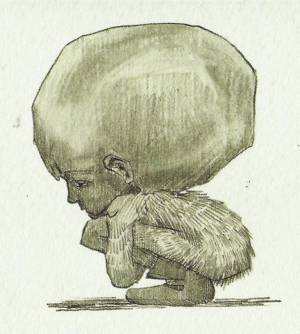
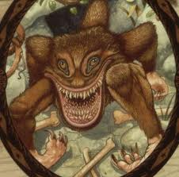

Мурлокомль (англ. Horklump) - происходит из Скандинавии, в настоящее время распространен
по всей Северной Европе. Своим внешним видом напоминает мясистый розоватый гриб, покрытый
редкой жёсткой чёрной щетиной. Очень быстро размножается и за несколько дней может заполонить
весь сад. Вместо корней запускает в землю жилистые щупальца, отыскивая свою основную пищу
— земляных червей. Служит любимым лакомством для садовых гномов. Других предназначений,
насколько можно судить, не имеет.
Мурлокомль (англ. Horklump) - происходит из Скандинавии, в настоящее время распространен
по всей Северной Европе. Своим внешним видом напоминает мясистый розоватый гриб, покрытый
редкой жёсткой чёрной щетиной. Очень быстро размножается и за несколько дней может заполонить
весь сад. Вместо корней запускает в землю жилистые щупальца, отыскивая свою основную пищу
— земляных червей. Служит любимым лакомством для садовых гномов. Других предназначений,
насколько можно судить, не имеет.
Избавиться от мурлокомля можно с помощью яда глизня.
В книге Златопуста Локонса «Мародёрство с монстрами» описывается иной способ
избавления от мурлокомля: нужно воздействовать на него заклинанием Флиппендо,
чтобы он втянул шипы, а затем вырвать его из земли. Также там описывается один
любопытный факт: мурлокомль не является растением, он — животное. Cок мурлокомля
используется для изготовления некоторых зелий, как, например, Гербицид.
Погребин (англ. Pogrebin) — демон, обитающий в России, высотой чуть более фута, с мохнатым туловищем и большой гладкой серой головой. Скорчившись, погребин становится похож на блестящий округлый камень. Погребины стараются держаться поближе к людям, ходят за ними по пятам, прячась в их тени, а если человек оглянется, мгновенно припадают к земле. Если позволить погребину следовать за собой в течение нескольких часов, у жертвы появляется ощущение безысходности, переходящей в отчаяние и безволие. Когда жертва падает на колени и начинает плакать над беспросветностью жизни, погребин набрасывается на нее и пожирает. Впрочем, его легко отогнать при помощи несложных чар, заклятия «Остолбеней!» или просто пинками. 

Пятиног или Волосатый МакБун (англ. Quintaped) — чрезвычайно опасный хищник,
который особенно охотно нападает на людей. Его приземистое тело покрыто густой
рыжевато-коричневой шерстью, так же, как и все пять ног с подвернутыми внутрь
ступнями. Пятиног встречается только на острове Дрир у северного побережья Шотландии.
Из-за этого остров пришлось обработать заклятием Ненаносимости.
По легенде, на острове Дрир когда-то жили две семьи волшебников: МакКливерты и МакБуны.
Однажды между главой клана МакКливертов Дугальдом и главой клана МакБунов Квинтиусом
произошла пьяная драка, которая закончилась смертью Дугальда. Рассказывают, что в отместку
МакКливерты как-то ночью окружили поселок МакБунов и превратили их всех до единого
в пятиногих чудовищ. Слишком поздно МакКливерты сообразили, что в преображенном виде МакБуны
куда опаснее (в обычном своем состоянии МакБуны славились плохими способностями к магии).
Мало того, МакБуны всеми силами противились любым попыткам вернуть им человеческий облик.
Чудовища перебили всех МакКливертов, и в конце концов на острове не осталось ни
одного человека, некому было взять в руки волшебную палочку. И тут МакБунам стало ясно,
что им придется навсегда остаться такими, какие они есть.
Правдива ли эта легенда или нет, мы никогда не узнаем. Не осталось в живых ни МакБунов,
ни МакКливертов, которые могли бы рассказать, что на самом деле случилось с их предками,
а пятиноги не умеют говорить и упорно сопротивляются при попытках Отдела регулирования
магических популяций и контроля над ними отловить хотя бы один экземпляр и вернуть ему
первоначальный вид. Видимо, даже если прозвище Волосатых МакБунов отражает их истинную
историю, пятиноги вполне довольны и счастливы в зверином обличии.